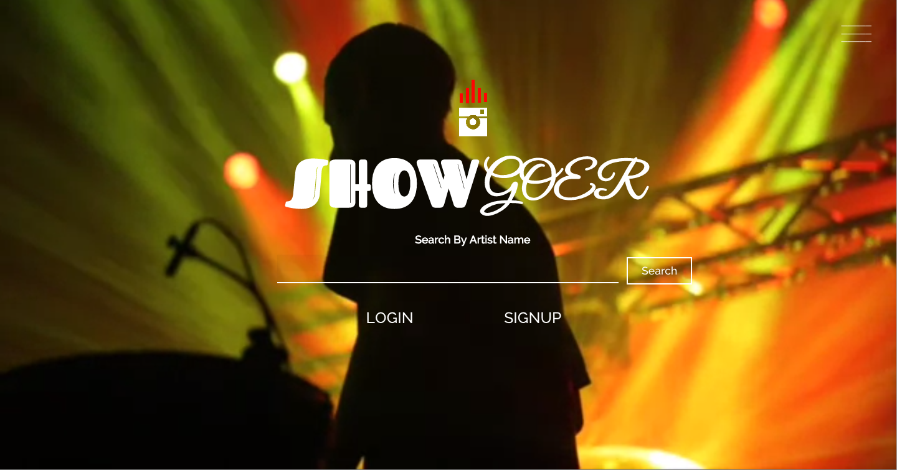

My name is Malcolm Bouzi and I currently live in Queens, New York. Being in the music industry had allowed me to pursue my desire to connect with people through a combination of sound and technology. Since discovering that programming could satisfy that same appetite for meaning connection in a compelling way, I decided to join an intensive 19-week coding bootcamp. At Dev Bootcamp, I learned programming fundamentals with Ruby, Agile development, Rails, Object Oriented JavaScript, test driven development, HTML5, CSS, version control and interactive software practices.
Through this journey I developed and love for front-end development. I relish the challenge of bringing a vision to fruition thorough the most elegant visual and interactive experiences I can fashion. I have a strong desire to continue advancing my skills through new challenges, whether it be exploring a new framework or creating in a new language.
Showgoer is web application where users document their concert experience through sharing personal media.
Built with: Ruby on Rails, CSS3, HTML5, Javascript, Amazon S3, FFMPEG
|  |